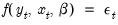

|
|
|
A system is a group of equations containing unknown parameters. Systems can be estimated using a number of multivariate techniques that take into account the interdependencies among the equations in the system.

 is a vector of endogenous variables,
is a vector of endogenous variables,  is a vector of exogenous variables, and
is a vector of exogenous variables, and  is a vector of possibly serially correlated disturbances. The task of estimation is to find estimates of the vector of parameters
is a vector of possibly serially correlated disturbances. The task of estimation is to find estimates of the vector of parameters  .
.